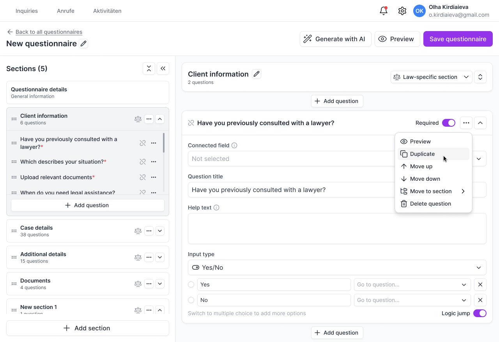
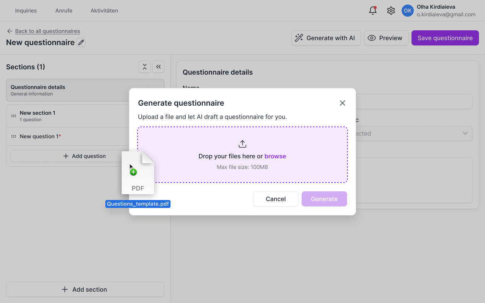

60% reduced time to first onboarding call with law firms
Introducing self-service features to speed up law firm onboarding and decrease the CS workload.

Context
Removing the bottleneck from the CS team
Our customers are law firms that have their own clients. When a new client requests legal assistance, they need to fill out onboarding documents and questionnaires. Before the initiative, all custom templates were manually created by the CS team, which led to a load of work before they even talked to the customer. The bottleneck was costing the support team many hours of their weekly capacity and slowing down new customer onboardings.
My goal was to design tools that allow users to complete the setup by themselves and, as a result, save time for the CS team to onboard customers to the product faster.
Process
Starting with the people doing the work
As an in-house UX designer, my role involved the end-to-end design process: performing internal research, identifying pain points, defining user flows, designing new user-facing interfaces, and collaborating with the engineering team to check technical feasibility of the solutions and hand them off for development.
My first step was talking to the customer support managers, since they handle the most complex tasks. Their main responsibility is helping users resolve problems, but they also manually create document templates and questionnaires for new customers. They shared their pain points with the current system, and I analyzed the insights to create a better user experience.
Solution
Request data with a custom questionnaire
The questionnaires were the most challenging part of the design. They are used to request structured data from clients that will be used to create documents.
The previous version on the admin side was initially implemented without design input, so it had no proper navigation between sections and questions. In the new version, I introduced an overview in the sidebar, and refined the ability for users to connect fields to each question to make sure that all data is saved correctly in the system.

Users can also generate questionnaires with AI to have a starting point instead of a blank page. Currently, this feature is limited to creating new questionnaires from scratch, but the next steps would involve live updates through the AI chat and pre-made templates for most common cases.

Prepare documents to sign
Document templates are used primarily to request signatures from clients before the lawyer starts working on the case.
The templates mostly follow the same logic as questionnaires with one key difference. They also support connected fields, but in reverse — the data that is already in the system will flow into the document to avoid filling it manually.
Outcome
60% less time to the first call
The new self-service features allowed the CS team to introduce pre-made templates for different types of customers. This way, the customers are presented with a baseline that they can customize according to their needs. The new process has eased the load on the customer support managers by removing a chunk of manual work and cut the time before the first customer call by 60%.
Olha showed great ability to quickly understand the customer's processes and presented them in an easy to understand and extendable way. Because I'm a huge fan of iteration I value that a lot.